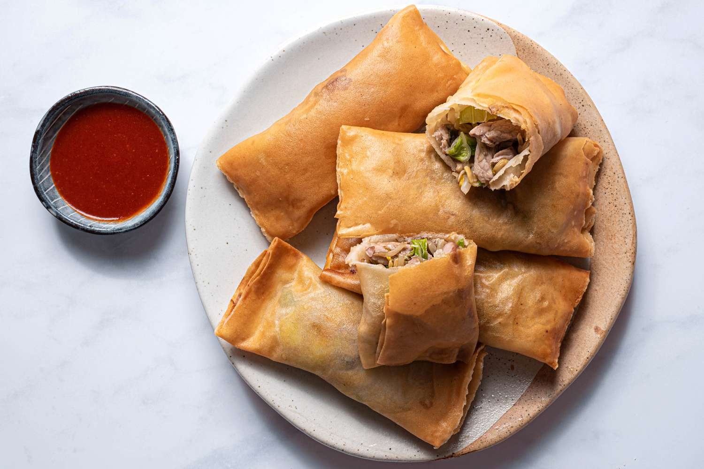

Chinese Egg Rolls

Description
The origins of egg rolls still need to be clarified for many people.
Still, according to Van’s Kitchen and Wikipedia sources, modern egg
rolls were invented at a Chinese restaurant in the United States.
Without the creation of egg rolls, they would not be a popular
Chinese appetizer that many people enjoy today.
Let's cook! :D
Ingredients
- 12 egg roll wraps
- 1/2 - 1 lb ground pork, chicken, or beef
- 2 teaspoons chopped fresh ginger
- 2 garlic cloves, minced
- 1 teaspoon salt
- 1 teaspoon sugar
- 1/4 cup soy sauce
- 1 teaspoon sesame oil
- 1 (16 ounce) bag shredded cabbage and carrot coleslaw mix (not quite the whole bag)
- 4 green onions, sliced
- 1 egg, beaten with
- 1 teaspoon water
- oil (for frying pan)
Steps
- Brown pork with ginger and garlic in pan; drain any grease.
- Mix salt, sugar, soy sauce and sesame oil. Add to pork and mix well.
- In large bowl combine cabbage mix and green onions.
- Pour hot meat over vegetables and stir well. Let cool slightly.
- Lay wrap in front of you so that it looks like a diamond.
- Place 3 tablespoons pork filling in center of egg roll wrapper.
- Fold bottom point up over filling and roll once.
- Fold in right and left points.
- Brush beaten egg on top point.
- Finish rolling.
- Set aside and repeat with remaining filling.
- Heat 2-3 inches oil in large frying pan to very hot (350ºF).
- Fry a few egg rolls in pan at a time, 2-3 minutes per side.
- Drain on paper towels.
- Serve with sweet and sour sauce, plum sauce, hoisin sauce or jalapeño pepper jelly.